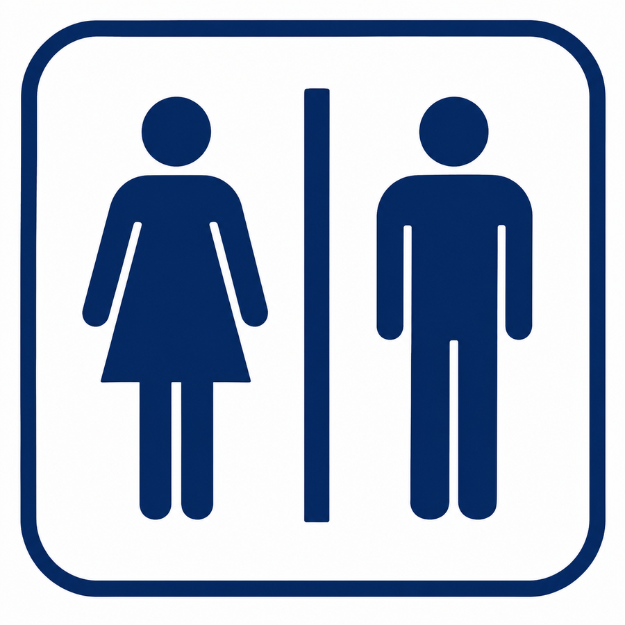

Restrooms

PHASE 13.0
Restroom page connected
The Restroom button now opens this page. Exit-based restroom searching will be added in the next micro-build.

PHASE 13.0
The Restroom button now opens this page. Exit-based restroom searching will be added in the next micro-build.